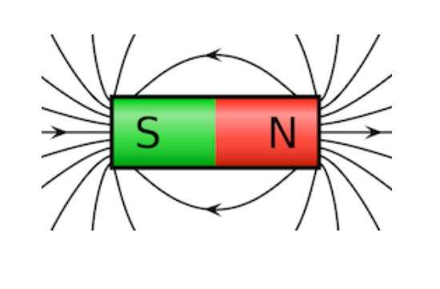
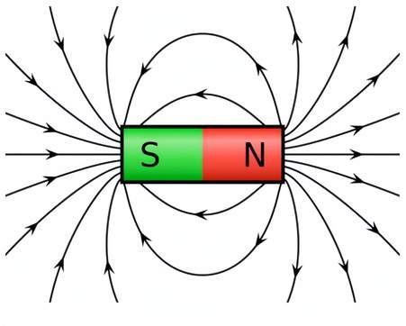
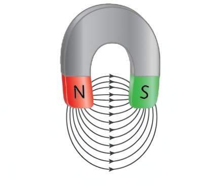
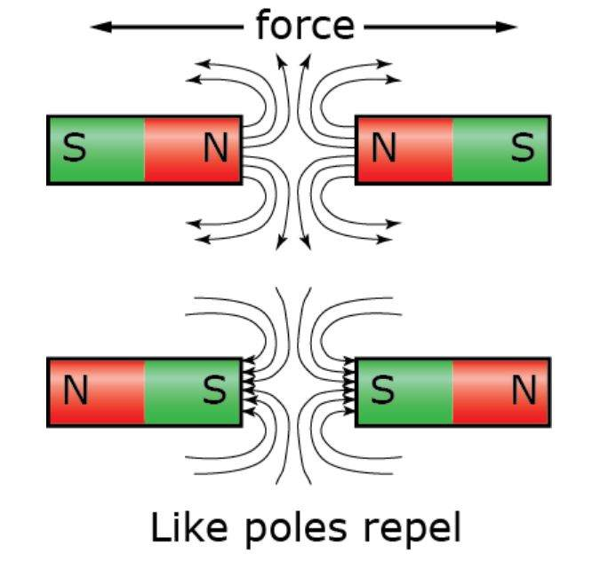
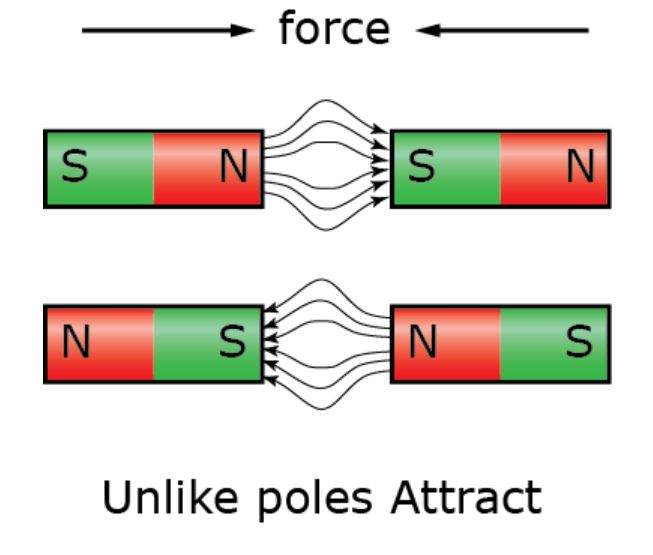
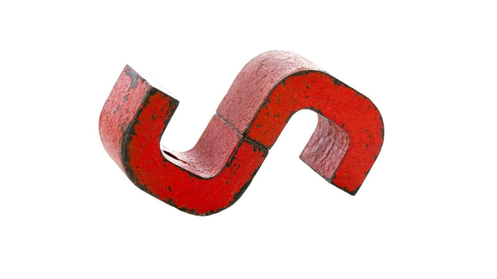
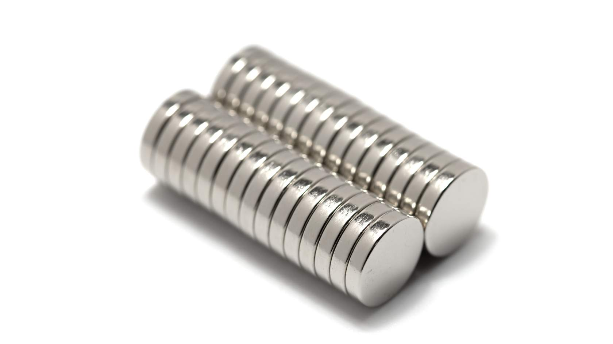
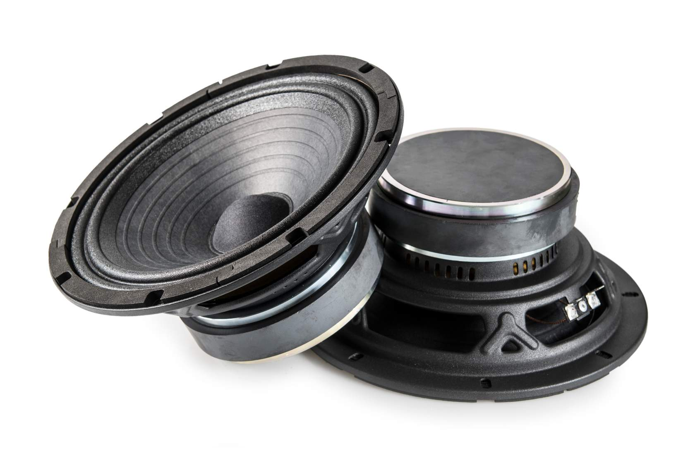
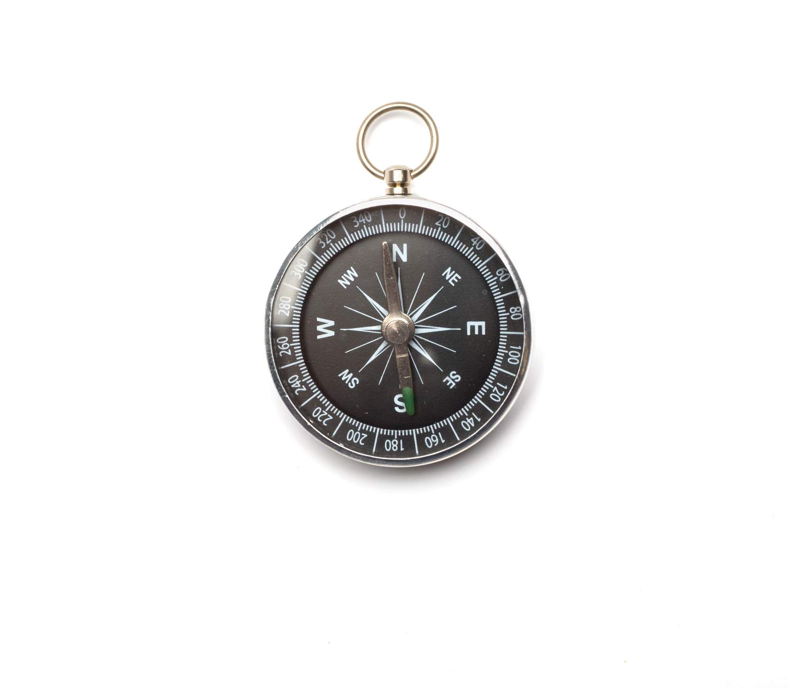

Introduction.
Magnetism and in particular ‘electromagnetism’ plays a big part in the operation of many electrical machines and components. Relays, contactors, ballasts, transformers, alternators, generators and electric motors all depend on magnetism for their operation.
1.2 Permanent Magnetic Principles
1.2.1 Permanent Magnet
A magnet is any object which has the property of attracting magnetic substances to itself. This property is called ‘magnetism’.
Temporary Magnet
Loses practically all of its magnetism when the magnetising influence is removed.
Magnetic Flux
The magnetic force is carried by invisible magnetic field lines called magnetic ‘flux’. All practical magnets have a ‘north pole’ and a ‘south pole’.

Field Patterns

Bar Magnet
Concentrated field lines at each end of the bar.

Horseshoe Magnet
Concentrated in the space between poles.
Laws of Magnetism
- 1. Like poles repel (Repulsion).
- 2. Unlike poles attract (Attraction).
Physical Movement Warning
Fault currents can cause magnetic forces that physically move conductors, damaging switchboards.
Repulsion
AttractionMagnetic Materials
Many substances exhibit some degree of magnetism and are affected by a magnetic field. Some materials, called ‘ferromagnetic materials’ have a strong attraction to magnetic lines of force.
| Magnetic Material | Property | Examples |
|---|---|---|
| Ferromagnetic | Strongly attracted to a magnetic field. | Iron, Cobalt, Nickel |
| Paramagnetic | Weakly attracted to a magnetic field. | Molybdenum, Magnesium, Lithium, Aluminium, Tantalum, Oxygen |
| Diamagnetic | Weakly repelled by a magnetic field. | Copper, Carbon (including wood and plastic), Mercury, Hydrogen (including water), Silver, Gold |
Manufactured Magnets
Permanent magnets are generally made from alloys of ferromagnetic and paramagnetic/diamagnetic materials. These are classified as ‘hard’ or ‘soft’ based on their magnetic retention.
‘Alnico’ Alloy
A widely used trade name for permanent magnets. It consists of:

Common Magnet ShapesRare-earth Magnets
Rare-earth magnets are very strong, compact magnets made from the alloys of rare-earth elements.
Neodymium Magnet
Manufactured from an alloy of neodymium, iron and boron (NdFeB).
Typical Application
Used where strong, compact permanent magnets are required, such as the motor field poles in cordless electric tools.

Neodymium (Rare-Earth) MagnetsApplications
Permanent magnets are essential in modern electrical engineering. Hover or click the cards below to see where a strong permanent magnetic field is required.





Magnetic Screening
Magnetic screening (shielding) is used to redirect stray magnetic fields away from sensitive components. Because magnetic flux passes through ferromagnetic materials (like iron) more easily than through air or nonmagnetic materials, we can create a "low-resistance" path for the field to follow.
Technical Core
Surrounding a device with a ferromagnetic screen ensures the field is redirected through the screen material rather than through the sensitive device at the center.
.jpg) Flux redirection (PEER)
Flux redirection (PEER)
Reed Switch
A ‘reed switch’ is an electrical switch operated by a magnetic field. Its contacts are made from ferromagnetic material that react when a magnet is brought into proximity.
‘NO’ (Normally Open)
Contacts CLOSE in the presence of a magnet.
‘NC’ (Normally Closed)
Contacts OPEN in the presence of a magnet.
Security Application
Commonly used as a door alarm trigger. The switch is fixed to the door jam while a magnet is attached to the door. Opening the door moves the magnet away, operating the contacts to trigger the alarm circuit.